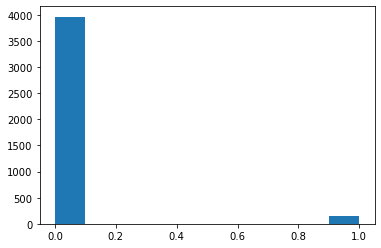

4. From reads and insertions to essentiality prediction using a Regression Model¶
import pandas as pd
import pylab as pl
import numpy as np
import seaborn as sns
import scipy.optimize as opt
from sklearn import preprocessing
%matplotlib inline
import matplotlib.pyplot as plt
import os
script_dir = os.path.dirname('__file__') #<-- absolute dir the script is in
rel_path_data_insertions="Python_scripts/Data_Files/wt-truncated-insertions-per-gene.txt"
rel_path_data_reads="Python_scripts/Data_Files/wt-truncated-reads-per-gene.txt"
abs_path_data_reads = os.path.join(script_dir, rel_path_data_reads)
abs_path_data_insertions = os.path.join(script_dir, rel_path_data_insertions)
# os.chdir('../') #<-- for binder os.chdir('../')
data_insertions = pd.read_csv(abs_path_data_insertions, sep="\t", header=0)
data_reads = pd.read_csv(abs_path_data_reads, sep="\t", header=0)
data_reads_pd=data_reads.iloc[:,0:3]
data_reads_pd.columns=['Gene_name','Essentiality','reads-truncated']
data_reads_pd.head()
| Gene_name | Essentiality | reads-truncated | |
|---|---|---|---|
| 0 | YAL069W | 0 | 123 |
| 1 | YAL068W-A | 0 | 22 |
| 2 | PAU8 | 0 | 14 |
| 3 | YAL067W-A | 0 | 0 |
| 4 | SEO1 | 0 | 88 |
data_insertions_pd=data_insertions.iloc[:,0:3]
data_insertions_pd.columns=['Gene_name','Essentiality','insertions-truncated']
data_insertions_pd.head()
| Gene_name | Essentiality | insertions-truncated | |
|---|---|---|---|
| 0 | YAL069W | 0 | 5 |
| 1 | YAL068W-A | 0 | 2 |
| 2 | PAU8 | 0 | 1 |
| 3 | YAL067W-A | 0 | 0 |
| 4 | SEO1 | 0 | 15 |
data=data_reads_pd.copy()
data['insertions']=data_insertions_pd['insertions-truncated']
data
| Gene_name | Essentiality | reads-truncated | insertions | |
|---|---|---|---|---|
| 0 | YAL069W | 0 | 123 | 5 |
| 1 | YAL068W-A | 0 | 22 | 2 |
| 2 | PAU8 | 0 | 14 | 1 |
| 3 | YAL067W-A | 0 | 0 | 0 |
| 4 | SEO1 | 0 | 88 | 15 |
| ... | ... | ... | ... | ... |
| 6595 | ARR3 | 0 | 265 | 7 |
| 6596 | YPR202W | 0 | 19 | 18 |
| 6597 | YPR203W | 0 | 12 | 8 |
| 6598 | YPR204W | 0 | 11 | 66 |
| 6599 | YPR204C-A | 0 | 4 | 4 |
6600 rows × 4 columns
4.1. Visualising how the input data is distributed regarding the type of essentiality of the genes¶
fig, axes=plt.subplots(1,2)
plt.subplots_adjust(wspace=0.5)
sns.boxplot(x='Essentiality',y='insertions',data=data,ax=axes[0])
# sns.boxplot(x='Essentiality',y='insertions-non-truncated',data=data,ax=axes[0])
axes[0].set_ylim([0,100])
sns.boxplot(x='Essentiality',y='reads-truncated',data=data,ax=axes[1])
axes[1].set_ylim([0,300])
(0.0, 300.0)
4.2. Remove outliers¶
sns.scatterplot(y='insertions',x=np.arange(0,len(data)),data=data,hue='Essentiality')
# plt.ylim([0,20])
plt.figure()
sns.scatterplot(y='reads-truncated',x=np.arange(0,len(data)),data=data,hue='Essentiality')
# plt.ylim([0,260])
<AxesSubplot:ylabel='reads-truncated'>
---------------------------------------------------------------------------
ValueError Traceback (most recent call last)
/usr/share/miniconda3/envs/wintest/lib/python3.7/site-packages/IPython/core/formatters.py in __call__(self, obj)
339 pass
340 else:
--> 341 return printer(obj)
342 # Finally look for special method names
343 method = get_real_method(obj, self.print_method)
/usr/share/miniconda3/envs/wintest/lib/python3.7/site-packages/IPython/core/pylabtools.py in <lambda>(fig)
246
247 if 'png' in formats:
--> 248 png_formatter.for_type(Figure, lambda fig: print_figure(fig, 'png', **kwargs))
249 if 'retina' in formats or 'png2x' in formats:
250 png_formatter.for_type(Figure, lambda fig: retina_figure(fig, **kwargs))
/usr/share/miniconda3/envs/wintest/lib/python3.7/site-packages/IPython/core/pylabtools.py in print_figure(fig, fmt, bbox_inches, **kwargs)
130 FigureCanvasBase(fig)
131
--> 132 fig.canvas.print_figure(bytes_io, **kw)
133 data = bytes_io.getvalue()
134 if fmt == 'svg':
/usr/share/miniconda3/envs/wintest/lib/python3.7/site-packages/matplotlib/backend_bases.py in print_figure(self, filename, dpi, facecolor, edgecolor, orientation, format, bbox_inches, pad_inches, bbox_extra_artists, backend, **kwargs)
2191 else suppress())
2192 with ctx:
-> 2193 self.figure.draw(renderer)
2194
2195 bbox_inches = self.figure.get_tightbbox(
/usr/share/miniconda3/envs/wintest/lib/python3.7/site-packages/matplotlib/artist.py in draw_wrapper(artist, renderer, *args, **kwargs)
39 renderer.start_filter()
40
---> 41 return draw(artist, renderer, *args, **kwargs)
42 finally:
43 if artist.get_agg_filter() is not None:
/usr/share/miniconda3/envs/wintest/lib/python3.7/site-packages/matplotlib/figure.py in draw(self, renderer)
1862 self.patch.draw(renderer)
1863 mimage._draw_list_compositing_images(
-> 1864 renderer, self, artists, self.suppressComposite)
1865
1866 renderer.close_group('figure')
/usr/share/miniconda3/envs/wintest/lib/python3.7/site-packages/matplotlib/image.py in _draw_list_compositing_images(renderer, parent, artists, suppress_composite)
129 if not_composite or not has_images:
130 for a in artists:
--> 131 a.draw(renderer)
132 else:
133 # Composite any adjacent images together
/usr/share/miniconda3/envs/wintest/lib/python3.7/site-packages/matplotlib/artist.py in draw_wrapper(artist, renderer, *args, **kwargs)
39 renderer.start_filter()
40
---> 41 return draw(artist, renderer, *args, **kwargs)
42 finally:
43 if artist.get_agg_filter() is not None:
/usr/share/miniconda3/envs/wintest/lib/python3.7/site-packages/matplotlib/cbook/deprecation.py in wrapper(*inner_args, **inner_kwargs)
409 else deprecation_addendum,
410 **kwargs)
--> 411 return func(*inner_args, **inner_kwargs)
412
413 return wrapper
/usr/share/miniconda3/envs/wintest/lib/python3.7/site-packages/matplotlib/axes/_base.py in draw(self, renderer, inframe)
2746 renderer.stop_rasterizing()
2747
-> 2748 mimage._draw_list_compositing_images(renderer, self, artists)
2749
2750 renderer.close_group('axes')
/usr/share/miniconda3/envs/wintest/lib/python3.7/site-packages/matplotlib/image.py in _draw_list_compositing_images(renderer, parent, artists, suppress_composite)
129 if not_composite or not has_images:
130 for a in artists:
--> 131 a.draw(renderer)
132 else:
133 # Composite any adjacent images together
/usr/share/miniconda3/envs/wintest/lib/python3.7/site-packages/matplotlib/artist.py in draw_wrapper(artist, renderer, *args, **kwargs)
39 renderer.start_filter()
40
---> 41 return draw(artist, renderer, *args, **kwargs)
42 finally:
43 if artist.get_agg_filter() is not None:
/usr/share/miniconda3/envs/wintest/lib/python3.7/site-packages/matplotlib/collections.py in draw(self, renderer)
929 def draw(self, renderer):
930 self.set_sizes(self._sizes, self.figure.dpi)
--> 931 Collection.draw(self, renderer)
932
933
/usr/share/miniconda3/envs/wintest/lib/python3.7/site-packages/matplotlib/artist.py in draw_wrapper(artist, renderer, *args, **kwargs)
39 renderer.start_filter()
40
---> 41 return draw(artist, renderer, *args, **kwargs)
42 finally:
43 if artist.get_agg_filter() is not None:
/usr/share/miniconda3/envs/wintest/lib/python3.7/site-packages/matplotlib/collections.py in draw(self, renderer)
383 else:
384 combined_transform = transform
--> 385 extents = paths[0].get_extents(combined_transform)
386 if (extents.width < self.figure.bbox.width
387 and extents.height < self.figure.bbox.height):
/usr/share/miniconda3/envs/wintest/lib/python3.7/site-packages/matplotlib/path.py in get_extents(self, transform, **kwargs)
601 xys.append(curve([0, *dzeros, 1]))
602 xys = np.concatenate(xys)
--> 603 return Bbox([xys.min(axis=0), xys.max(axis=0)])
604
605 def intersects_path(self, other, filled=True):
/usr/share/miniconda3/envs/wintest/lib/python3.7/site-packages/numpy/core/_methods.py in _amin(a, axis, out, keepdims, initial, where)
41 def _amin(a, axis=None, out=None, keepdims=False,
42 initial=_NoValue, where=True):
---> 43 return umr_minimum(a, axis, None, out, keepdims, initial, where)
44
45 def _sum(a, axis=None, dtype=None, out=None, keepdims=False,
ValueError: zero-size array to reduction operation minimum which has no identity
<Figure size 432x288 with 1 Axes>
---------------------------------------------------------------------------
ValueError Traceback (most recent call last)
/usr/share/miniconda3/envs/wintest/lib/python3.7/site-packages/IPython/core/formatters.py in __call__(self, obj)
339 pass
340 else:
--> 341 return printer(obj)
342 # Finally look for special method names
343 method = get_real_method(obj, self.print_method)
/usr/share/miniconda3/envs/wintest/lib/python3.7/site-packages/IPython/core/pylabtools.py in <lambda>(fig)
246
247 if 'png' in formats:
--> 248 png_formatter.for_type(Figure, lambda fig: print_figure(fig, 'png', **kwargs))
249 if 'retina' in formats or 'png2x' in formats:
250 png_formatter.for_type(Figure, lambda fig: retina_figure(fig, **kwargs))
/usr/share/miniconda3/envs/wintest/lib/python3.7/site-packages/IPython/core/pylabtools.py in print_figure(fig, fmt, bbox_inches, **kwargs)
130 FigureCanvasBase(fig)
131
--> 132 fig.canvas.print_figure(bytes_io, **kw)
133 data = bytes_io.getvalue()
134 if fmt == 'svg':
/usr/share/miniconda3/envs/wintest/lib/python3.7/site-packages/matplotlib/backend_bases.py in print_figure(self, filename, dpi, facecolor, edgecolor, orientation, format, bbox_inches, pad_inches, bbox_extra_artists, backend, **kwargs)
2191 else suppress())
2192 with ctx:
-> 2193 self.figure.draw(renderer)
2194
2195 bbox_inches = self.figure.get_tightbbox(
/usr/share/miniconda3/envs/wintest/lib/python3.7/site-packages/matplotlib/artist.py in draw_wrapper(artist, renderer, *args, **kwargs)
39 renderer.start_filter()
40
---> 41 return draw(artist, renderer, *args, **kwargs)
42 finally:
43 if artist.get_agg_filter() is not None:
/usr/share/miniconda3/envs/wintest/lib/python3.7/site-packages/matplotlib/figure.py in draw(self, renderer)
1862 self.patch.draw(renderer)
1863 mimage._draw_list_compositing_images(
-> 1864 renderer, self, artists, self.suppressComposite)
1865
1866 renderer.close_group('figure')
/usr/share/miniconda3/envs/wintest/lib/python3.7/site-packages/matplotlib/image.py in _draw_list_compositing_images(renderer, parent, artists, suppress_composite)
129 if not_composite or not has_images:
130 for a in artists:
--> 131 a.draw(renderer)
132 else:
133 # Composite any adjacent images together
/usr/share/miniconda3/envs/wintest/lib/python3.7/site-packages/matplotlib/artist.py in draw_wrapper(artist, renderer, *args, **kwargs)
39 renderer.start_filter()
40
---> 41 return draw(artist, renderer, *args, **kwargs)
42 finally:
43 if artist.get_agg_filter() is not None:
/usr/share/miniconda3/envs/wintest/lib/python3.7/site-packages/matplotlib/cbook/deprecation.py in wrapper(*inner_args, **inner_kwargs)
409 else deprecation_addendum,
410 **kwargs)
--> 411 return func(*inner_args, **inner_kwargs)
412
413 return wrapper
/usr/share/miniconda3/envs/wintest/lib/python3.7/site-packages/matplotlib/axes/_base.py in draw(self, renderer, inframe)
2746 renderer.stop_rasterizing()
2747
-> 2748 mimage._draw_list_compositing_images(renderer, self, artists)
2749
2750 renderer.close_group('axes')
/usr/share/miniconda3/envs/wintest/lib/python3.7/site-packages/matplotlib/image.py in _draw_list_compositing_images(renderer, parent, artists, suppress_composite)
129 if not_composite or not has_images:
130 for a in artists:
--> 131 a.draw(renderer)
132 else:
133 # Composite any adjacent images together
/usr/share/miniconda3/envs/wintest/lib/python3.7/site-packages/matplotlib/artist.py in draw_wrapper(artist, renderer, *args, **kwargs)
39 renderer.start_filter()
40
---> 41 return draw(artist, renderer, *args, **kwargs)
42 finally:
43 if artist.get_agg_filter() is not None:
/usr/share/miniconda3/envs/wintest/lib/python3.7/site-packages/matplotlib/collections.py in draw(self, renderer)
929 def draw(self, renderer):
930 self.set_sizes(self._sizes, self.figure.dpi)
--> 931 Collection.draw(self, renderer)
932
933
/usr/share/miniconda3/envs/wintest/lib/python3.7/site-packages/matplotlib/artist.py in draw_wrapper(artist, renderer, *args, **kwargs)
39 renderer.start_filter()
40
---> 41 return draw(artist, renderer, *args, **kwargs)
42 finally:
43 if artist.get_agg_filter() is not None:
/usr/share/miniconda3/envs/wintest/lib/python3.7/site-packages/matplotlib/collections.py in draw(self, renderer)
383 else:
384 combined_transform = transform
--> 385 extents = paths[0].get_extents(combined_transform)
386 if (extents.width < self.figure.bbox.width
387 and extents.height < self.figure.bbox.height):
/usr/share/miniconda3/envs/wintest/lib/python3.7/site-packages/matplotlib/path.py in get_extents(self, transform, **kwargs)
601 xys.append(curve([0, *dzeros, 1]))
602 xys = np.concatenate(xys)
--> 603 return Bbox([xys.min(axis=0), xys.max(axis=0)])
604
605 def intersects_path(self, other, filled=True):
/usr/share/miniconda3/envs/wintest/lib/python3.7/site-packages/numpy/core/_methods.py in _amin(a, axis, out, keepdims, initial, where)
41 def _amin(a, axis=None, out=None, keepdims=False,
42 initial=_NoValue, where=True):
---> 43 return umr_minimum(a, axis, None, out, keepdims, initial, where)
44
45 def _sum(a, axis=None, dtype=None, out=None, keepdims=False,
ValueError: zero-size array to reduction operation minimum which has no identity
<Figure size 432x288 with 1 Axes>
4.2.1. Make use of the IQR to remove the outliers¶
IQR is part of Descriptive statistics and also called as midspead , middle 50%
IQR is first Quartile minus the Third Quartile (Q3-Q1)
y_insert=data['insertions']
removed_outliers_insertions = y_insert.between(y_insert.quantile(.05), y_insert.quantile(.95)) # any value bellow Q1-0.05*IQR or above Q3+0.95*IQR is an outlier
y_reads=data['reads-truncated']
removed_outliers_reads = y_reads.between(y_reads.quantile(.05), y_reads.quantile(.95))
fig, axes=plt.subplots(1,2)
plt.subplots_adjust(wspace=0.5,right=1.2)
axes[0].plot(y_insert,alpha=0.3)
axes[0].plot(y_insert[removed_outliers_insertions],label='removed-outliers')
axes[0].legend()
axes[0].set_ylabel('Insertions after truncation')
axes[1].plot(y_reads,alpha=0.3)
axes[1].plot(y_reads[removed_outliers_reads],label='removed-outliers')
axes[1].legend()
axes[1].set_ylabel('Reads after truncation')
Text(0, 0.5, 'Reads after truncation')
data['insertions-non-outliers']=y_insert[removed_outliers_insertions]
data['reads-non-outliers']=y_reads[removed_outliers_reads]
fig, axes=plt.subplots(1,4)
plt.subplots_adjust(wspace=2.6,right=1.5)
sns.boxplot(x='Essentiality',y='insertions-non-outliers',data=data,ax=axes[0])
axes[0].set_title('With the outliers removed')
sns.boxplot(x='Essentiality',y='insertions',data=data,ax=axes[1])
axes[1].set_title('Original')
sns.boxplot(x='Essentiality',y='reads-non-outliers',data=data,ax=axes[2])
axes[2].set_title('With the outliers removed')
sns.boxplot(x='Essentiality',y='reads-truncated',data=data,ax=axes[3])
axes[3].set_title('original')
Text(0.5, 1.0, 'original')
data_remove_outliers=data.copy()
# data_remove_outliers=data_remove_outliers.drop(columns=['reads-non-truncated','insertions-non-truncated'])
data_remove_outliers.fillna(0,inplace=True)
data_remove_outliers.head()
| Gene_name | Essentiality | reads-truncated | insertions | insertions-non-outliers | reads-non-outliers | |
|---|---|---|---|---|---|---|
| 0 | YAL069W | 0 | 123 | 5 | 5.0 | 123.0 |
| 1 | YAL068W-A | 0 | 22 | 2 | 2.0 | 22.0 |
| 2 | PAU8 | 0 | 14 | 1 | 1.0 | 14.0 |
| 3 | YAL067W-A | 0 | 0 | 0 | 0.0 | 0.0 |
| 4 | SEO1 | 0 | 88 | 15 | 15.0 | 88.0 |
data_remove_outliers.groupby('Essentiality').describe()
| reads-truncated | insertions | ... | insertions-non-outliers | reads-non-outliers | |||||||||||||||||
|---|---|---|---|---|---|---|---|---|---|---|---|---|---|---|---|---|---|---|---|---|---|
| count | mean | std | min | 25% | 50% | 75% | max | count | mean | ... | 75% | max | count | mean | std | min | 25% | 50% | 75% | max | |
| Essentiality | |||||||||||||||||||||
| 0 | 5414.0 | 79.477096 | 159.159200 | 0.0 | 9.0 | 45.0 | 109.0 | 9134.0 | 5414.0 | 8.267270 | ... | 8.0 | 25.0 | 5414.0 | 56.070927 | 61.913440 | 0.0 | 4.0 | 34.0 | 90.0 | 252.0 |
| 1 | 1186.0 | 20.420742 | 64.925943 | 0.0 | 0.0 | 0.0 | 5.0 | 1037.0 | 1186.0 | 1.704047 | ... | 1.0 | 24.0 | 1186.0 | 14.865093 | 38.751512 | 0.0 | 0.0 | 0.0 | 4.0 | 251.0 |
2 rows × 32 columns
data_remove_outliers[data_remove_outliers['Gene_name']=='CDC24']
| Gene_name | Essentiality | reads-truncated | insertions | insertions-non-outliers | reads-non-outliers | |
|---|---|---|---|---|---|---|
| 35 | CDC24 | 1 | 76 | 2 | 2.0 | 76.0 |
sns.pairplot(data=data_remove_outliers,hue='Essentiality',vars=['reads-non-outliers','insertions-non-outliers'])
<seaborn.axisgrid.PairGrid at 0x7f73de5c5910>
X = np.asarray(data_remove_outliers[['insertions-non-outliers', 'reads-non-outliers']])
X[0:5]
array([[ 5., 123.],
[ 2., 22.],
[ 1., 14.],
[ 0., 0.],
[ 15., 88.]])
y = np.asarray(data['Essentiality'])
y [0:30]
array([0, 0, 0, 0, 0, 0, 0, 0, 0, 0, 0, 0, 0, 0, 0, 0, 0, 0, 0, 0, 0, 0,
0, 0, 0, 0, 0, 0, 0, 0])
from sklearn import preprocessing
X = preprocessing.StandardScaler().fit(X).transform(X)
X[0:5]
array([[ 0.05942446, 1.22806495],
[-0.50543601, -0.44055462],
[-0.69372283, -0.5727225 ],
[-0.88200965, -0.8040163 ],
[ 1.94229269, 0.64983045]])
from sklearn.model_selection import train_test_split
X_train, X_test, y_train, y_test = train_test_split( X, y, test_size=0.1, random_state=4)
print ('Train set:', X_train.shape, y_train.shape)
print ('Test set:', X_test.shape, y_test.shape)
Train set: (5940, 2) (5940,)
Test set: (660, 2) (660,)
X_train[np.isnan(X_train)]
array([], dtype=float64)
from sklearn.linear_model import LogisticRegression
from sklearn.metrics import confusion_matrix
LR = LogisticRegression(C=0.01, solver='liblinear').fit(X_train,y_train)
LR
LogisticRegression(C=0.01, solver='liblinear')
yhat = LR.predict(X_test)
yhat[0:4]
array([0, 0, 0, 0])
from sklearn.metrics import classification_report, confusion_matrix
import itertools
def plot_confusion_matrix(cm, classes,
normalize=False,
title='Confusion matrix',
cmap=plt.cm.Blues):
"""
This function prints and plots the confusion matrix.
Normalization can be applied by setting `normalize=True`.
"""
if normalize:
cm = cm.astype('float') / cm.sum(axis=1)[:, np.newaxis]
print("Normalized confusion matrix")
else:
print('Confusion matrix, without normalization')
print(cm)
plt.imshow(cm, interpolation='nearest', cmap=cmap)
plt.title(title)
plt.colorbar()
tick_marks = np.arange(len(classes))
plt.xticks(tick_marks, classes, rotation=45)
plt.yticks(tick_marks, classes)
fmt = '.2f' if normalize else 'd'
thresh = cm.max() / 2.
for i, j in itertools.product(range(cm.shape[0]), range(cm.shape[1])):
plt.text(j, i, format(cm[i, j], fmt),
horizontalalignment="center",
color="white" if cm[i, j] > thresh else "black")
plt.tight_layout()
plt.ylabel('True label')
plt.xlabel('Predicted label')
print(confusion_matrix(y_test, yhat, labels=[1,0]))
[[ 0 115]
[ 0 545]]
cnf_matrix = confusion_matrix(y_test, yhat, labels=[1,0])
np.set_printoptions(precision=2)
# Plot non-normalized confusion matrix
plt.figure()
plot_confusion_matrix(cnf_matrix, classes=['Essential','Non essential'],normalize= False, title='Confusion matrix')
Confusion matrix, without normalization
[[ 0 115]
[ 0 545]]
print (classification_report(y_test, yhat))
precision recall f1-score support
0 0.83 1.00 0.90 545
1 0.00 0.00 0.00 115
accuracy 0.83 660
macro avg 0.41 0.50 0.45 660
weighted avg 0.68 0.83 0.75 660
/usr/share/miniconda3/envs/wintest/lib/python3.7/site-packages/sklearn/metrics/_classification.py:1221: UndefinedMetricWarning: Precision and F-score are ill-defined and being set to 0.0 in labels with no predicted samples. Use `zero_division` parameter to control this behavior. _warn_prf(average, modifier, msg_start, len(result))
4.2.2. Predicting the probabilities for each gene to be essential or not¶
yprob=LR.predict_proba(X)# probability of cdc24 to be essential according this model
yprob[35]
array([0.82, 0.18])
data_remove_outliers['probability of being essential']=yprob[:,1]
sns.distplot(data_remove_outliers[data_remove_outliers['Essentiality']==0]['probability of being essential'],label='non-essentials',norm_hist=True)
sns.distplot(data_remove_outliers[data_remove_outliers['Essentiality']==1]['probability of being essential'],label='true-essentials',norm_hist=True)
plt.vlines(x=0.3,ymin=0,ymax=60,linewidth=2,alpha=0.5)
plt.vlines(x=0.4,ymin=0,ymax=60,linewidth=2,alpha=0.5)
plt.hlines(y=60,xmin=0.3,xmax=0.4,linewidth=2,alpha=0.5)
plt.fill_between(x=[0.3, 0.4],y1=60,color='black',alpha=0.2,label='76% of changes to be essential')
plt.legend()
<matplotlib.legend.Legend at 0x7f73dea841d0>
ratio_essentials=[]
ratio_nonessentials=[]
prob=np.arange(0,1,0.01)
for i in prob:
ratio_essentials.append(np.sum(y[np.where(yprob[:,1]>i)[0]])/len(yprob[:,1]>i)) # the sum symbolizes the number of 1's which are the true essential proteins
ratio_nonessentials.append(1-np.sum(y[np.where(yprob[:,0]>i)[0]])/len(y[np.where(yprob[:,0]>i)[0]]))
plt.scatter(prob,ratio_nonessentials,alpha=0.3,label= 'Class 0 Probab')
plt.scatter(prob,ratio_essentials,alpha=0.3,label='Class I Probab')
plt.xlabel('Probabilities')
plt.ylabel('ratio of true classification')
plt.legend()
<matplotlib.legend.Legend at 0x7f73d4cd2f10>
index_prone2essential=[]
bound=0.3
for i in np.arange(0,len(yprob)):
if yprob[i,1] > bound :
index_prone2essential.append(i)
ratio_true_essentials=np.sum(data_remove_outliers.iloc[index_prone2essential,:]['Essentiality'])/data_remove_outliers['Essentiality'].value_counts()[1]
4.2.3. Summary from the model¶
print('- The essential genes represents a ',data_remove_outliers['Essentiality'].value_counts()[1]/len(data_remove_outliers) * 100,'%', 'of the population of genes.')
print('- The ratio of true essentials contained in the genes that have more than',bound,'probability of being essential is =', ratio_true_essentials *100,'%.','This represents',(len(index_prone2essential))/len(data_remove_outliers) * 100,'%', 'of all genes. In other words, with this regression model we can trust that a gene has', ratio_true_essentials *100,'%' ,'changes of being essential if the probability given by the model is higher than',bound)
print('- For the genes that has less than ',bound,'Pr to be essential , then I can assure they are non essential, which are ', len(data_remove_outliers)-len(index_prone2essential),'genes. That represents the',(len(data_remove_outliers)-len(index_prone2essential))/data_remove_outliers['Essentiality'].value_counts()[0] * 100,'%','of the total number of non essential genes.')
- The essential genes represents a 17.96969696969697 % of the population of genes.
- The ratio of true essentials contained in the genes that have more than 0.3 probability of being essential is = 76.72849915682967 %. This represents 32.59090909090909 % of all genes. In other words, with this regression model we can trust that a gene has 76.72849915682967 % changes of being essential if the probability given by the model is higher than 0.3
- For the genes that has less than 0.3 Pr to be essential , then I can assure they are non essential, which are 4449 genes. That represents the 82.17584041374215 % of the total number of non essential genes.
plt.hist(y[np.where(yprob[:,1]<0.3)]);

sns.distplot(yprob[:,0])
sns.distplot(yprob[:,1])
<AxesSubplot:>